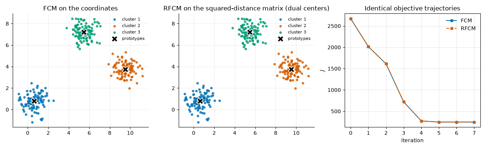
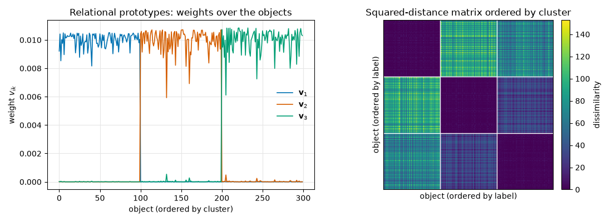
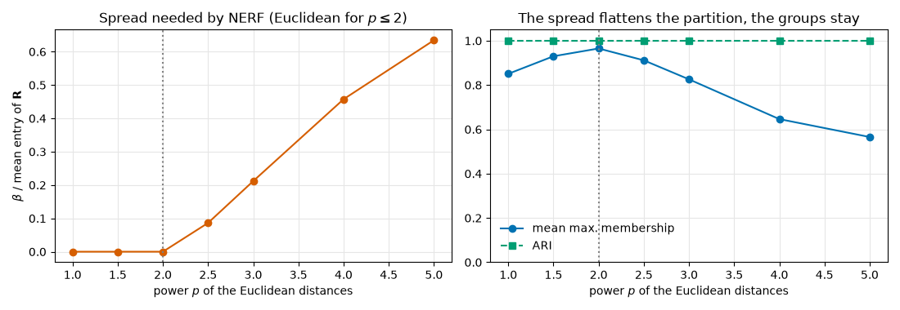

Note
Go to the end to download the full example code or to run this example in your browser via Binder.
Relational fuzzy c-means and NERF for non-Euclidean data#
Fuzzy c-means needs the data as vectors: a prototype is a weighted mean and the distance to it is Euclidean. Hathaway, Davenport and Bezdek showed that the same functional can be minimized when only the matrix \(\mathbf{R}\) of squared pairwise distances is known. The prototype becomes a weight vector over the objects, \(\mathbf{v}_i=\mathbf{U}_i^m/\sum_k\mu_{ik}^m\), and the squared distance of object \(k\) to it is \(d^2_{ik}=(\mathbf{R}\mathbf{v}_i)_k-\tfrac12\mathbf{v}_i^T\mathbf{R}\mathbf{v}_i\), an identity that holds for any weights summing to one as long as \(\mathbf{R}\) is Euclidean. Relational FCM (RFCM) therefore reproduces FCM exactly, iterate by iterate, when \(\mathbf{R}\) comes from Euclidean data. When it does not (squared city-block distances, cubed distances, dynamic-time-warping dissimilarities), some \(d^2_{ik}\) turn negative and RFCM breaks down. NERF c-means (Hathaway and Bezdek) adds a constant \(\beta\) to all off-diagonal entries, which shifts every relational distance by \(\tfrac{\beta}{2}\lVert\mathbf{e}_k-\mathbf{v}_i\rVert^2\); it raises \(\beta\) adaptively, only when a negative distance appears and only as much as needed.
import time
import matplotlib.pyplot as plt
import numpy as np
from sklearn.metrics import adjusted_rand_score
from fuzzyclust import FCM
from fuzzyclust.datasets import make_fuzzy_blobs
from fuzzyclust.plotting import PALETTE, plot_clusters
from fuzzyclust.relational import NERFCM, RelationalFCM, pairwise_dissimilarity, plot_dissimilarity_matrix
X, y = make_fuzzy_blobs(n_clusters=3, random_state=0)
N = X.shape[0]
RFCM reproduces FCM exactly#
Both algorithms start from the same random partition. RFCM sees only the matrix of squared Euclidean distances, yet its memberships, its objective at every iteration and the number of iterations coincide with those of FCM on the coordinates; its dual centers \(\sum_k v_{ik}\mathbf{x}_k\) are the FCM centers.
# [snippet:duality]
R = pairwise_dissimilarity(X, metric="sqeuclidean") # squared Euclidean distances
U0 = np.random.RandomState(0).rand(N, 3) # a common random start
fcm = FCM(n_clusters=3, init=U0).fit(X)
rfcm = RelationalFCM(n_clusters=3, metric="precomputed", init=U0).fit(R)
print(f"max |U_RFCM - U_FCM| = {np.abs(rfcm.membership_ - fcm.membership_).max():.1e}, "
f"iterations {rfcm.n_iter_} vs {fcm.n_iter_}, "
f"J = {rfcm.objective_:.4f} vs {fcm.objective_:.4f}")
dual_centers = rfcm.relational_centers_ @ X
print("dual centers - FCM centers:", np.abs(dual_centers - fcm.cluster_centers_).max())
# [/snippet:duality]
fig, axes = plt.subplots(1, 3, figsize=(13, 4.0))
plot_clusters(X, fcm.labels_, fcm.cluster_centers_, ax=axes[0])
axes[0].set_title("FCM on the coordinates")
plot_clusters(X, rfcm.labels_, dual_centers, ax=axes[1])
axes[1].set_title("RFCM on the squared-distance matrix (dual centers)")
axes[2].plot(fcm.objective_history_, "o-", color=PALETTE[0], label="FCM", ms=5)
axes[2].plot(rfcm.objective_history_, "s--", color=PALETTE[1], label="RFCM", ms=4)
axes[2].set_xlabel("iteration")
axes[2].set_ylabel("$J$")
axes[2].set_title("Identical objective trajectories")
axes[2].legend(frameon=False)
axes[2].grid(True, color="0.9")
plt.tight_layout()

max |U_RFCM - U_FCM| = 2.0e-15, iterations 8 vs 8, J = 246.7311 vs 246.7311
dual centers - FCM centers: 1.0658141036401503e-14
The relational prototypes are weight vectors over the objects#
A relational prototype has one weight per object; it is the normalized column of \(\mathbf{U}^m\) and lives in the simplex of the objects rather than in the feature space. The left panel plots the three prototypes against the object index, with the objects sorted by cluster; the dissimilarity matrix (right) shows the block structure of the three groups.
order = np.argsort(rfcm.labels_, kind="stable")
fig, axes = plt.subplots(1, 2, figsize=(11, 4.0))
for i in range(3):
axes[0].plot(rfcm.relational_centers_[i, order], color=PALETTE[i], lw=1.2, label=f"$\\mathbf{{v}}_{i + 1}$")
axes[0].set_xlabel("object (ordered by cluster)")
axes[0].set_ylabel("weight $v_{ik}$")
axes[0].set_title("Relational prototypes: weights over the objects")
axes[0].legend(frameon=False)
axes[0].grid(True, color="0.9")
plot_dissimilarity_matrix(R, rfcm.labels_, ax=axes[1])
axes[1].set_title("Squared-distance matrix ordered by cluster")
plt.tight_layout()

Non-Euclidean matrices: RFCM fails, NERF spreads#
Squared city-block distances of the same points form a matrix that is not Euclidean (no point configuration realizes it with the Euclidean norm). RFCM hits a negative relational distance in its first iteration and stops with an error. NERF detects the negative distance, raises \(\beta\) by the smallest amount that makes all distances non-negative (here once), and converges to the same three groups.
# [snippet:nerf]
R_l1 = pairwise_dissimilarity(X, metric="cityblock") ** 2 # squared L1 distances: not Euclidean
try:
RelationalFCM(n_clusters=3, metric="precomputed", random_state=0).fit(R_l1)
except ValueError as err:
print("RFCM:", str(err)[:70], "...")
nerf = NERFCM(n_clusters=3, metric="precomputed", random_state=0).fit(R_l1)
print(f"NERF: beta = {nerf.beta_:.3f} after {nerf.n_spread_updates_} spread update(s), "
f"ARI = {adjusted_rand_score(y, nerf.labels_):.2f}, {nerf.n_iter_} iterations")
# [/snippet:nerf]
RFCM: Negative relational distance: the dissimilarity matrix is not (squared ...
NERF: beta = 1.513 after 1 spread update(s), ARI = 1.00, 9 iterations
Parameter study I: departure from Euclidean geometry#
The power \(p\) of the Euclidean distances, \(\mathbf{R}=[\lVert\mathbf{x}_j-\mathbf{x}_k\rVert^p]\), controls the departure from Euclidean geometry: for \(p\le2\) the matrix is Euclidean (Schoenberg); beyond \(p=2\) it is not, and the larger \(p\), the farther it is from Euclidean. NERF’s final \(\beta\) (relative to the mean entry of the matrix) is zero up to \(p=2\) and grows with \(p\) beyond it. The partition becomes flatter (the mean maximal membership drops), because the spread adds the same constant to every off-diagonal dissimilarity and so reduces the contrast between near and far objects. (Below \(p=2\) the partition is softer for another reason: a small power compresses the ratio of far to near distances, on which the membership formula depends.) The hard labels stay correct over the whole range.
# [snippet:power_scan]
D = pairwise_dissimilarity(X)
powers = (1.0, 1.5, 2.0, 2.5, 3.0, 4.0, 5.0)
rows = []
for p in powers:
Rp = D**p
model = NERFCM(n_clusters=3, metric="precomputed", random_state=0).fit(Rp)
rows.append((p, model.beta_ / Rp[np.triu_indices(N, 1)].mean(), model.n_spread_updates_,
model.membership_.max(axis=1).mean(), adjusted_rand_score(y, model.labels_)))
print(f"p = {p:.1f}: beta / mean(R) = {rows[-1][1]:.3f}, {rows[-1][2]} update(s), "
f"mean max membership = {rows[-1][3]:.2f}, ARI = {rows[-1][4]:.2f}")
# [/snippet:power_scan]
rows = np.asarray(rows)
fig, axes = plt.subplots(1, 2, figsize=(11, 3.8))
axes[0].plot(rows[:, 0], rows[:, 1], "o-", color=PALETTE[1])
axes[0].axvline(2.0, color="0.5", ls=":")
axes[0].set_xlabel("power $p$ of the Euclidean distances")
axes[0].set_ylabel(r"$\beta$ / mean entry of $\mathbf{R}$")
axes[0].set_title(r"Spread needed by NERF (Euclidean for $p \leq 2$)")
axes[0].grid(True, color="0.9")
axes[1].plot(rows[:, 0], rows[:, 3], "o-", color=PALETTE[0], label="mean max. membership")
axes[1].plot(rows[:, 0], rows[:, 4], "s--", color=PALETTE[2], label="ARI")
axes[1].axvline(2.0, color="0.5", ls=":")
axes[1].set_xlabel("power $p$ of the Euclidean distances")
axes[1].set_ylim(0, 1.05)
axes[1].set_title("The spread flattens the partition, the groups stay")
axes[1].legend(frameon=False, loc="lower left")
axes[1].grid(True, color="0.9")
plt.tight_layout()

p = 1.0: beta / mean(R) = 0.000, 0 update(s), mean max membership = 0.85, ARI = 1.00
p = 1.5: beta / mean(R) = 0.000, 0 update(s), mean max membership = 0.93, ARI = 1.00
p = 2.0: beta / mean(R) = 0.000, 0 update(s), mean max membership = 0.96, ARI = 1.00
p = 2.5: beta / mean(R) = 0.086, 2 update(s), mean max membership = 0.91, ARI = 1.00
p = 3.0: beta / mean(R) = 0.212, 1 update(s), mean max membership = 0.83, ARI = 1.00
p = 4.0: beta / mean(R) = 0.458, 1 update(s), mean max membership = 0.65, ARI = 1.00
p = 5.0: beta / mean(R) = 0.634, 1 update(s), mean max membership = 0.57, ARI = 1.00
Parameter study II: fuzziness exponent and initialization#
\(m\) plays its usual role. The random partition start of the paper
and the \(D^2\)-weighted seeding of objects both find the three
groups; their objectives are not comparable, because every run ends with
its own \(\beta\) and \(J\) is that of the spread matrix.
Restarts (n_init) guard against the local optima of the alternating
scheme on harder data.
print("squared L1 matrix, NERF:")
for m in (1.5, 2.0, 3.0):
model = NERFCM(n_clusters=3, metric="precomputed", m=m, random_state=0).fit(R_l1)
print(f" m = {m:.1f}: beta = {model.beta_:.3f}, mean max membership = "
f"{model.membership_.max(axis=1).mean():.2f}, ARI = {adjusted_rand_score(y, model.labels_):.2f}")
for init in ("random", "kmeans++"):
t0 = time.perf_counter()
model = NERFCM(n_clusters=3, metric="precomputed", init=init, n_init=5, random_state=0).fit(R_l1)
print(f" init = {init:9s} (5 restarts): J = {model.objective_:.2f} at beta = {model.beta_:.3f}, "
f"ARI = {adjusted_rand_score(y, model.labels_):.2f}, {time.perf_counter() - t0:.2f} s")
squared L1 matrix, NERF:
m = 1.5: beta = 0.559, mean max membership = 1.00, ARI = 1.00
m = 2.0: beta = 1.513, mean max membership = 0.95, ARI = 1.00
m = 3.0: beta = 0.443, mean max membership = 0.81, ARI = 1.00
init = random (5 restarts): J = 464.72 at beta = 0.421, ARI = 1.00, 0.05 s
init = kmeans++ (5 restarts): J = 413.56 at beta = 0.053, ARI = 1.00, 0.02 s
Take-away. Relational fuzzy c-means is not an approximation of FCM but its exact dual: on a matrix of squared Euclidean distances the two produce the same memberships, objective values and centers, so any dissimilarity that is Euclidean can be clustered without ever seeing coordinates. Its prototypes are weight vectors over the objects, and new objects are assigned from their dissimilarities to the training objects. Matrices that are not Euclidean produce negative relational distances; NERF repairs them with the smallest possible \(\beta\)-spread, which keeps the groups but flattens the memberships in proportion to how far the matrix is from Euclidean, so \(\beta\) also serves as a diagnostic of the data.
Total running time of the script: (0 minutes 0.744 seconds)